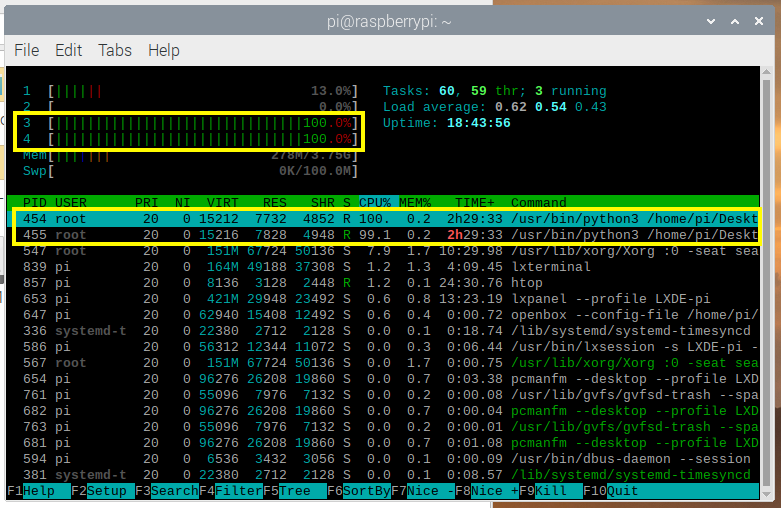

This chapter describe how to launch MoonShine, using the example of re-creating moonlight only (i.e., using the moon version of the files, which have filenames labeled “moon” before the file suffix). The moon version files include: moonshine_moon.py and LED_schedule_moon.csv located within Desktop/control_moon (on the Raspberry Pi Linux Desktop). And the systemd service moonshine_moon.service. The user should apply the same procedures for launching the sunlight/twilight system, using the sun version of the files, namely moonshine_sun.py and LED_schedule_sun.csv located within Desktop/control_sun. And the systemd service moonshine_sun.service.
The user should follow the two setup chapters before performing a launch. Here we continue from the software setup section Setting up systemd service, in which we described how to link a moonshine_moon.service to the moonshine_moon.py located in Desktop/control_moon
Things to check before a launch. Some of the information here are reminders of important points already mentioned in the other chapters. If MoonShine does not launch properly, check the followings for potential mistakes.
Generate an LED_schedule_moon.csv using the methods detailed in 2. MoonSim: Moonlight scheduler and 4. Edit LED schedule .csv, with the desired parameters. Make sure that the time zone was set correctly, and is a time zone without daylight saving time (DST).
Move the LED_schedule_moon.csv into the Raspberry Pi’s Desktop/control_moon
For the moonshine_moon.py to run, the LED_schedule_moon.csv must contain a row matching the time at launch. In other words, there cannot be a LED_schedule_moon.csv where the first row is a time in the future.
For example, let’s say that the user launches MoonShine at noon but does not want the LED arrays to start a light re-creation until midnight. In this case, the user should generate a LED_schedule_moon.csv by specifying noon as the start time in MoonSim: Moonlight led scheduler. Then open the LED_schedule_moon.csv in Excel and edit the rows of LED crude and fine value before midnight to zero. Having launched this edited LED_schedule_moon.csv at noon, the LEDs will start illuminating at midnight. Between noon (the launch time), the launch time, and midnight, the simulation will run, but because the LEDs rows have been edited to zero, there will be no illumination.
For the same reason, the user should never delete entire rows with excel in the middle of the LED_schedule_moon.csv. This will cause errors. If dark periods are required, the user must instead replace the LED illumination value with zeros.
The LED strips should never freeze during operation. However, they may become unresponsive after the moonshine_moon.service is stopped, or due to other accidents such as a loose connection in the GPIO cable.
To reset the LED array, unplug both the power and the GPIO cable, and reconnect them. It is advisable to turn off the Raspberry Pi before disconnecting the power and GPIO connections.
MoonShine should be up and running once the system clock hits 00 second.
To see if the service is active, enter:
systemctllist-units--type=service--state=active
On entering this text, the user will see a new window containing a list of active system services (Fig. 36).If systemd is running correctly the lines within the yellow box in Fig. 36 will appear.
On entering this text, the user will see a new window containing a summary of CPU usage. The user should now check that every minute there is CPU activity associated with MoonShine operation (corresponding to when MoonShine changes illumination values in the LEDs).
Note
Starting 8 sec before the start of every minute, one of the CUP cores (two if running two services, both moon and sunlight recreation) of the CPU cores will increase usage to 100% (Fig. 37). moonshine_moon.service will be listed as the top task in the list. The LEDs will be be updated at the start of the minute, and CPU usage will return to normal.

Fig. 37 Two CPUs at 100% usage just before the start of every minute, as the moonshine_moon.py and moonshine_sun.py are searching for a matching datetime to the current time.#
Note
The Raspberry Pi does not have a sleep mode or other energy saving modes.
A log.txt file will be created in Desktop/control_moon. This log allows the user to check the LED intensity values of the first 3 LEDs in the array. This file will be replaced with a new one upon restarting moonshine_moon.service.
Stopping the service file will stop MoonShine’s Python code from continuing to refresh the LEDs (the LEDs will remain at the last intensity). This is the only way to stop MoonShine.
To stop the service file, enter the following into the terminal:
sudosystemctlstopmoonshine_moon.service
To completely turn off the LED strips (which remain at their last intensity after Step 1 is completed), the user should run the following two Python scripts, clear_moon.py and clear_sun.py (download in Download files).
Place both these files on the Raspberry Pi desktop.
Then, to turn off the LEDs in a moonlight simulation, enter:
sudopython3Desktop/clear_moon.py
To turn off the LEDs in a sunlight simulation, enter.
sudopython3Desktop/clear_sun.py
Attention
Whenever the Raspberry Pi is rebooted, moonshine_moon.service and moonshine_sun.service launchs automatically. Even when the user stops the systemd service, it will start itself upon a reboot.